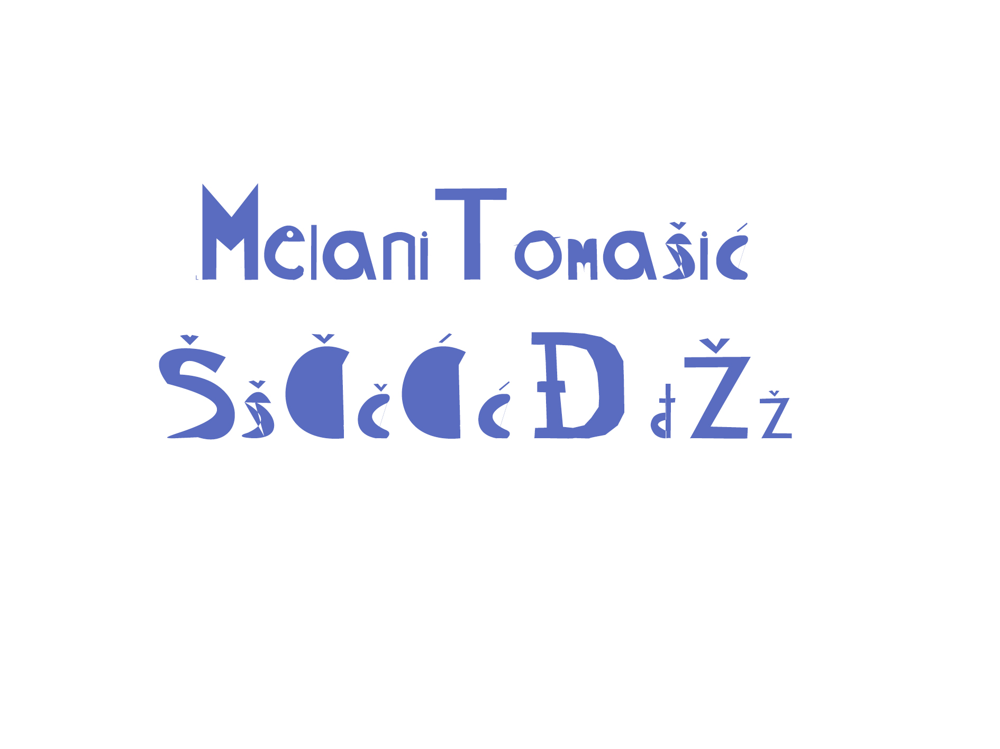
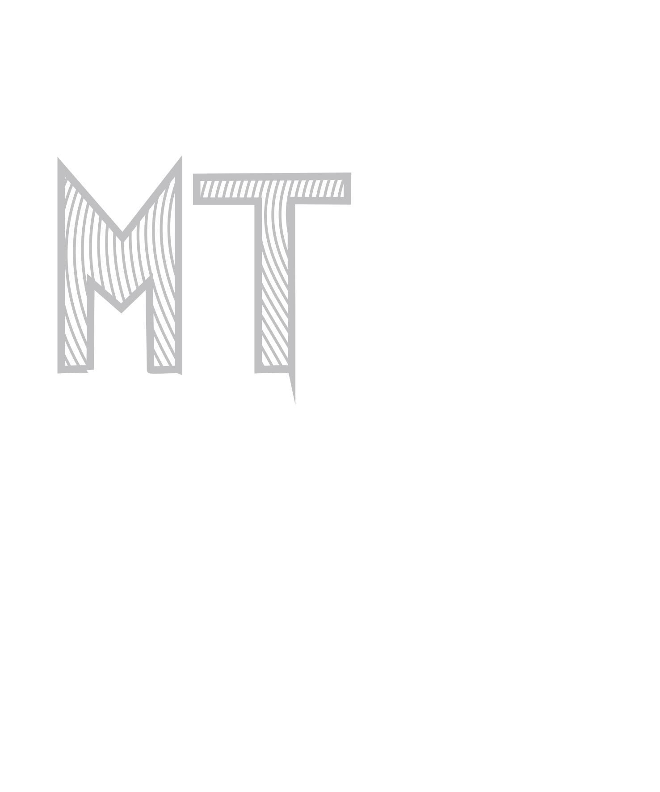
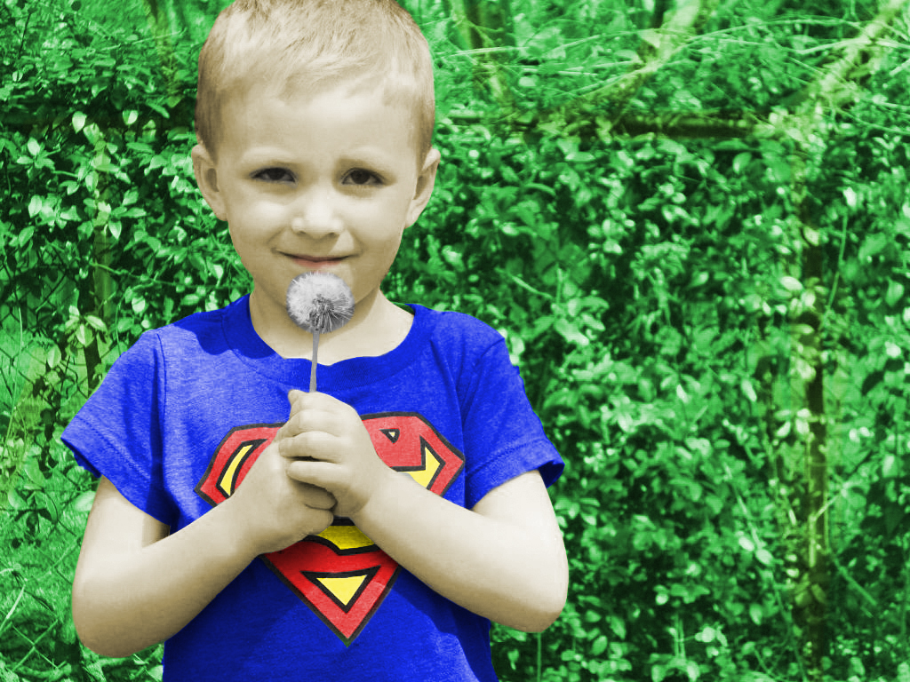
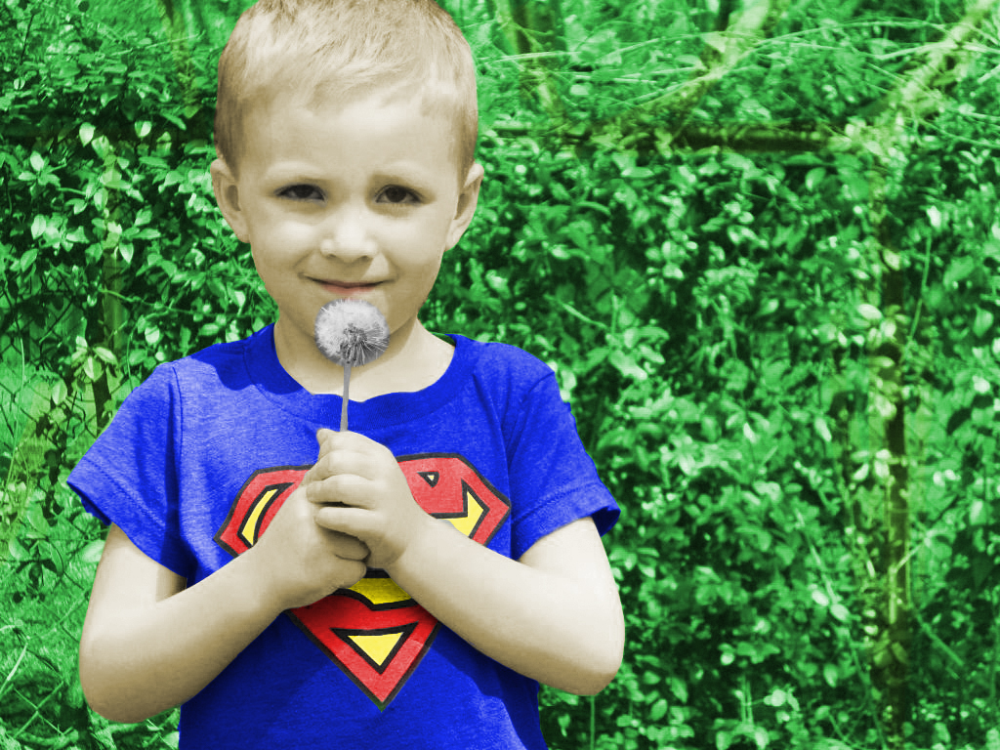

Prva vježba bila je izrada vlastitog fonta, radila sam u FontForgeu.
U drugoj vježbi crtali smo Bezierove krivulje u koordinantnom sustavu koristeći vlastiti font s prošle vježbe. Preko krivulja smo trebali ispisati vlastite inicijale i od njih napraviti masku.
U trećoj vježbi smo uvodili sliku u dokument, definirali swatch boje u RGB, CMYK i HSB sustavu boja, napravili transparenciju, crtali zatvorene objekte, multiplicirali i radili transformaciju, grupirali objekte te aplicirali swatch boje na objekte. Na drugoj strani dokumenta smo trebali izvesti vlastiti primjer sa multipliciranim objektom nacrtanim s Pen alatom. Radila sam u Adobe Illustratoru.
Zadatak četvrte vježbe bio je kreirati vlastiti složeni objekt u kojem ćemo koristiti tehnike spajanja i izrezivanja objekta te primijeniti različite vrste gradijenta. Vježbu sam radila u Adobe Illustratoru.
U softweru za izradu fonta Pen alatom nacrtati slovne znakove prema pravilima dizajna. Nacrtati i koristiti objekte vezane uz temu "flora i fauna podmorja", ispisati sve slovne znakove iz fonta, pretvoriti u krivulje te uklopiti u ilustraciju. Minimalno jednom napraviti Blend, koristiti maskiranje i transformacije objekata, koristiti mash te linearne i radijalne gradijente, definirati swatch boje koje ćemo koristiti i na kraju transparenciju.
U petoj vježbi radimo u Adobe Photoshopu. Uklanjamo manje pozadinske šumove,
kloniramo, kopiramo veće područje, posvijetljujemo i potamnjujemo, korektiramo tonove.
U šestoj vježbi maskiramo i selektiramo pojedine dijelove slike za bojanje, zatim spremamo selekciju kao kanal te kreiramo layere za kolorizaciju. Uzimamo vlastitu sliku i pretvorimo je u crno - bijelu te je koloriramo s najmanje 3 boje. Napraviti pet primjera iste slike s različitim postavkama kolarizacije. Program u kojem sam radila je Adobe Photoshop.


 

Tehnike selektiranja različitih tipova elemenata slika, Polygonal Lasso za jednostavne selekcije, Magnetic Lasso Tool, Quick Mask Mode, selekcije uz pomoć kanala, korekcije boja, izrada različitih sjena.
Zadani elementi koje treba koristiti u osmoj vježbi: Alati za retuširanje, alati za sekcije, alati za transformacije, tehnika koloriranja, maske, lokalne i globalne korekcije boja alatima korištenima u vježbama, sjene i transparencija slojeva.Svi slojevi i kanali moraju biti logično poredani i imenovani. Radila sam u Adobe Photoshopu.
Osnove obrade video materijala i uvođenje multimedije u video projekt. Rezultat vježbe je kinemagraf čija je karakteristika spajanje statične i pokretne slike. Kinemagraf ili eng. cinemagraph je video isječak čija se sekvenca ponavlja u beskonačnost, najčešće u GIF formatu.
Radila sam u programu Adobe Premiere Pro.

Rezanje i spajanje video isječaka iz više izvora, ubacivanje video efekata, brisanje i dodavanje zvuka te teksta. Zadatak je bio izrezati clip 1 i clip 2 na drugačiji način, dodati im barem tri nova efekta te jedan statični i jedan pomični tekst. Radila sam u Adobe Premiere Pro programu.